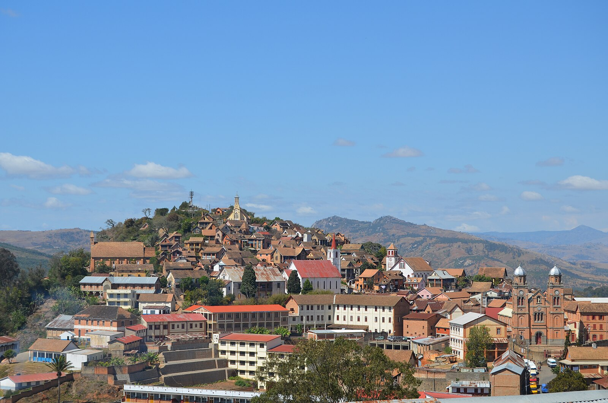

À propos de la ville
Fianarantsoa est connue pour ses vignobles, son architecture historique et ses paysages magnifiques. C'est une ville culturelle et éducative du sud-est de Madagascar.

Culture
Découvrez la riche culture malgache et l'histoire fascinante de la région de Haute Matsiatra.
Paysages
Des paysages à couper le souffle au coeur des Hautes Terres malgaches.
Vignobles
Visitez les célèbres vignobles et dégustez les vins locaux.